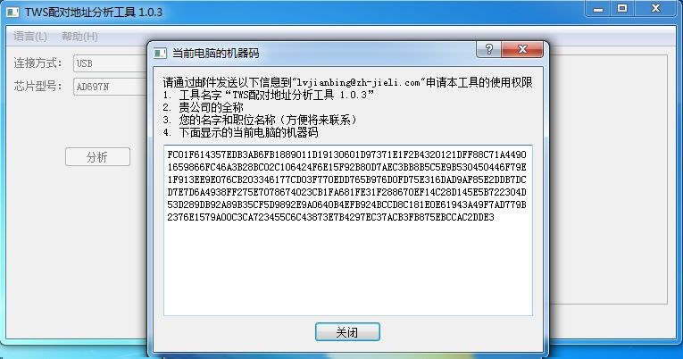
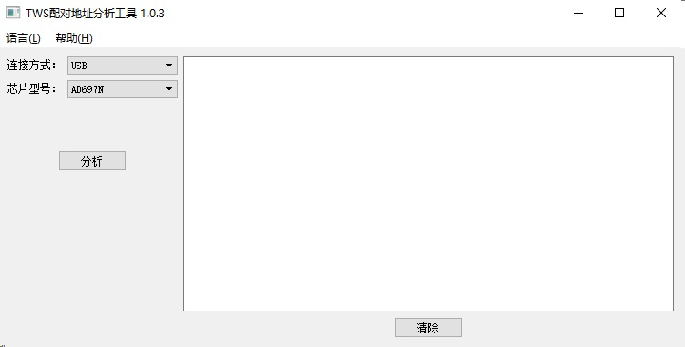
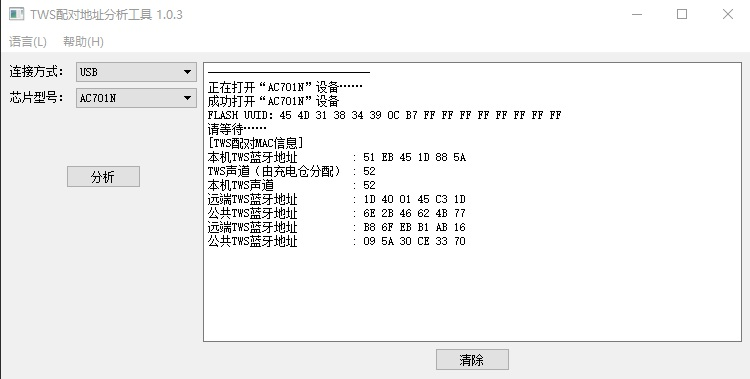

1. TWS Pairing Address Analysis Tool
1.1. About the tool
The TWS Pairing Address Analysis Tool reads and parses the pairing address information of TWS earphones.
This tool requires an Internet connection and can be used only with authorization from Jieli Technology.*
If you open the tool before you have been authorized by Jieli Technology, it displays the following message.
Follow the tool's instructions and send the relevant information to Jieli Technology at lvjianbing@zh-jieli.com to apply for permission to use the tool.

After you have been authorized, run the tool again. It no longer asks for authorization, and the window looks as shown below:

Now connect the device to the computer through the Jieli Forced Upgrade Tool 4.0, then select the connection mode (连接方式) between the device and the computer and the device's chip model (芯片型号).
Click the Analyze (分析) button, and the tool displays all TWS pairing address information in the device, as shown below:

1.2. Analysis method
(1) If the earphones are paired normally, the local address (本地地址) of the L earphone is the remote address (远端地址) on the R earphone, and the local address of the R earphone is the remote address on the L earphone. The common address (公共地址) generated when the L and R earphones pair is the same on both the L earphone and the R earphone.
(2) If the software is set to use the left earphone's address as the common address, the common address is the same as the local address of the L earphone.
(3) The pairing information of an earphone may show several remote addresses and common addresses. This means that the earphone has also been paired with other earphones, and the local addresses of those earphones are recorded in it.
(4) The pairing records are listed from oldest (top) to newest (bottom); the newest pairing record is the current pairing state of the device.